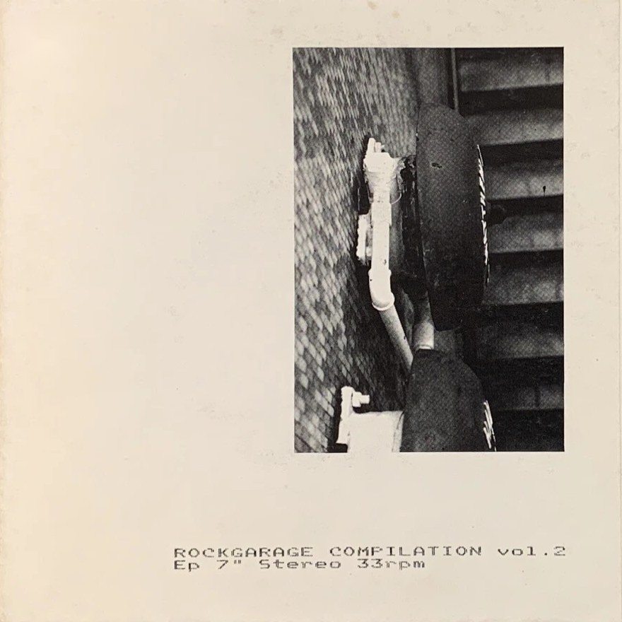

← Music

1983
Rockgarage Compilation Vol. 2
A compilation EP given away with Rockgarage magazine (issue 0/3), limited to 1,200 numbered copies. Frigidaire Tango fill side A with "Dazed Life". The four Rockgarage volumes were reissued together in 2020 by Spittle Records.
Tracklist
- 1Dazed Life — Frigidaire Tango
- 2East — Death in Venice
- 3I Am an Open Sea — Changeling
Data: Deezer, Discogs, Rockit and the label pages. Durations may differ between editions.